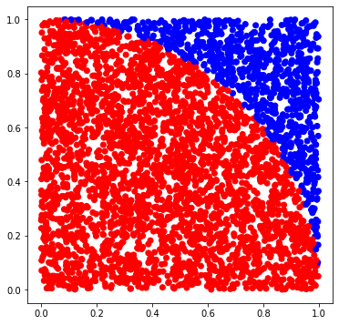

Calculating pi using Monte Carlo methods¶
Relevant formulas¶
square area: \(s = (2 r)^2\)
circle area: \(c = \pi r^2\)
\(c/s = (\pi r^2) / (4 r^2) = \pi / 4\)
\(\pi = 4 * c/s\)
Image to visualize the concept¶

[1]:
# importing modules that we will need
import random
import matplotlib.pyplot as plt
[2]:
# initializing the number of "throws"
num_points = 4000
[3]:
# here we "throw darts" and count the number of hits
points = []
hits = 0
for _ in range(num_points):
x, y = random.random(), random.random()
if x*x + y*y < 1.0:
hits += 1
points.append((x, y, "red"))
else:
points.append((x, y, "blue"))
[4]:
# unzip points into 3 lists
x, y, colors = zip(*points)
# define figure dimensions
fig, ax = plt.subplots()
fig.set_size_inches(6.0, 6.0)
# plot results
ax.scatter(x, y, c=colors)
[4]:
<matplotlib.collections.PathCollection at 0x228672217c0>

[5]:
# compute and print the estimate
fraction = hits / num_points
4 * fraction
[5]:
3.087
[ ]: